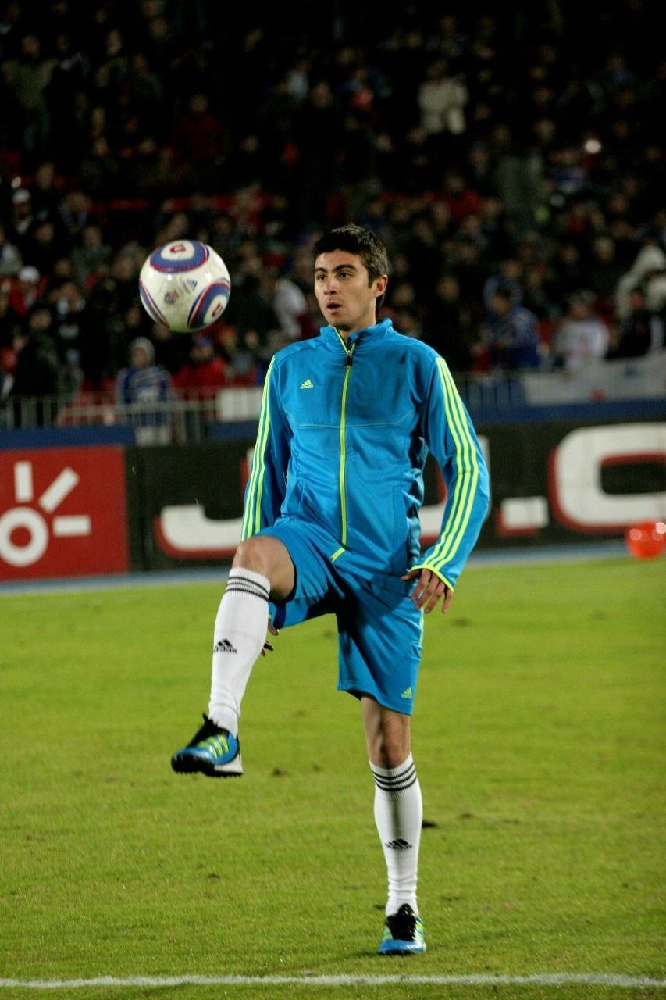
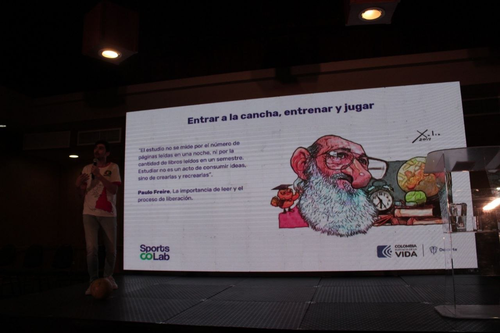
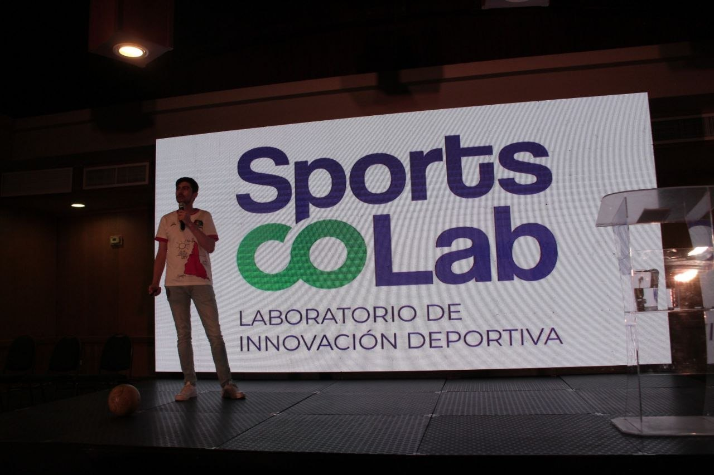
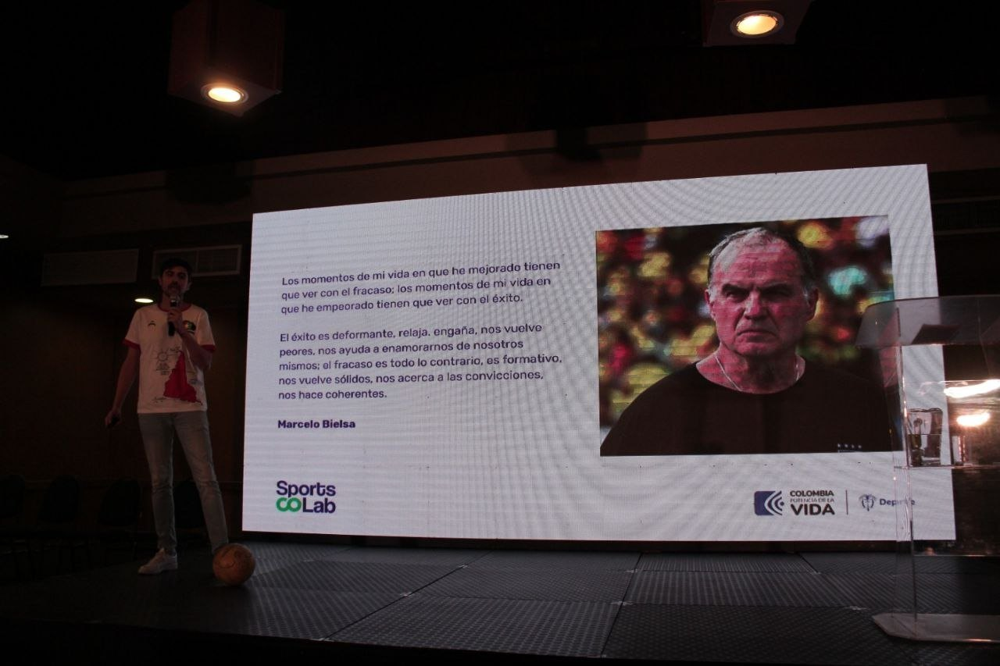

prova 03 / corpo, palco e cidade
A imagem certa muda o argumento.
Esta versão testa uma direção menos íntima e mais pública: campo profissional, pensamento em palco, cidade como arquivo e trajetória institucional.

01. Campo profissional
02. Pensamento público
03. Cidade e memória
04. Arquivo de trajetória
campo
Antes do jogo, o corpo já está lendo o mundo.
Esta imagem dá uma chave mais esportiva e biográfica ao Homoludens. Ela fala de técnica, rito, concentração e memória de atleta.
Uso recomendado: seção biográfica, ensaio sobre técnica, abertura de texto sobre o corpo que pensa antes da palavra.
A bola no palco impede que a ideia vire abstração.


cidade
Caminhar também é uma forma de pesquisa.
A imagem do mural abre uma camada menos esportiva e mais urbana. Ela serve quando Homoludens precisa respirar rua, arte, deslocamento e memória visual.

arquivo
Algumas imagens são boas porque provam uma travessia.

decisão editorial
Esta prova é mais institucional e esportiva. A anterior é mais humana e metodológica.
Se a home precisa parecer caderno autoral, a primeira prova vence. Se precisa parecer trajetória pública de um pesquisador-atleta, esta segunda prova abre melhor o caminho.